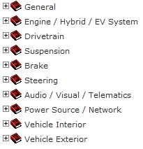
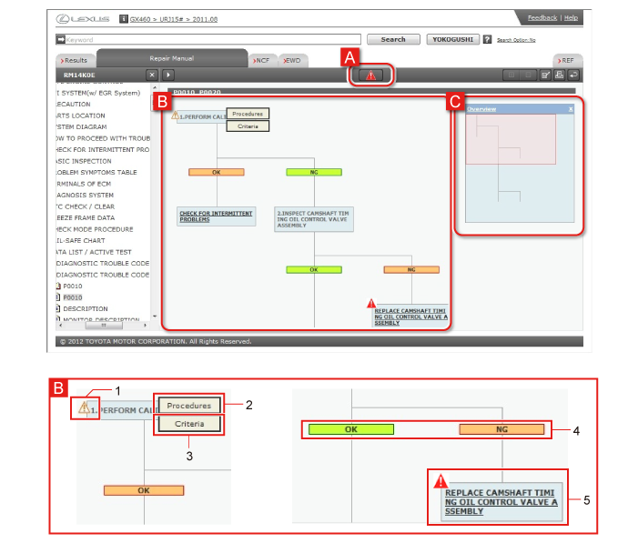
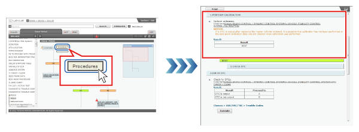
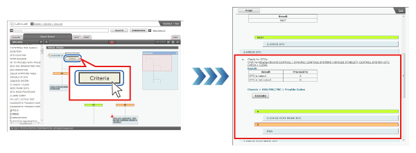

The Repair Manual consists of the following Categories, each of which contains related Sections.

Flow charts are used to display diagnostic procedures for diagnostic codes, and how to proceed with troubleshooting.
Flow charts make it easy to check the overall flow of the process, the links between consecutive steps, and the current diagnostic step. The details and criteria for each step can also be displayed in separate windows.

| A | Troubleshoot Caution/Notice/Hint marks These indicate that there is Troubleshoot Caution/Notice/Hint information related to the diagnostic procedure as a whole. Troubleshoot Caution/Notice/Hint information is displayed in a separate window. |
||||||||||
|---|---|---|---|---|---|---|---|---|---|---|---|
| B | Diagnostic Procedure The diagnostic procedure is displayed. For each diagnostic procedure, the color of the box and the presence of step numbers can be used to judge whether there is a next step.
|
||||||||||
| 1 | NOTICE marks These indicate that there is NOTICE information related to the step. NOTICE information is displayed in a separate window. |
||||||||||
| 2 | Procedures These are displayed when the mouse pointer is placed over a diagnostic procedure. Details of the diagnostic procedure concerned are displayed in a separate window. |
||||||||||
| 3 | Criteria These are displayed when the mouse pointer is placed over a diagnostic procedure. Criteria for the diagnostic procedure concerned are displayed in a separate window. |
||||||||||
| 4 | CAUTION marks These indicate that there is CAUTION information related to the diagnostic item. CAUTION details are displayed in a separate window. |
||||||||||
| 5 | Procedure link The procedure concerned is displayed in a separate window. |
||||||||||
| C | Overview chart This displays the flow chart as a whole. Click on the “x” to display/hide the overview chart. Drag the display range (the red box) to move the flow chart to the step you want to check. |
||||||||||
Place the mouse pointer over the step item, then click on Procedures.  |
Place the mouse pointer over the step item, then click on Criteria.  |
Select the item to check from the tree, and display the Contents.
GTS linkage is possible if GTS is connected. The Execute button is displayed in steps where GTS is used to perform diagnosis. The Execute button can be used to call GTS functions directly.
See Start GTS functions from the Repair Manual for details.